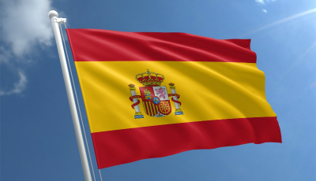
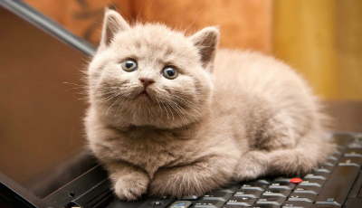
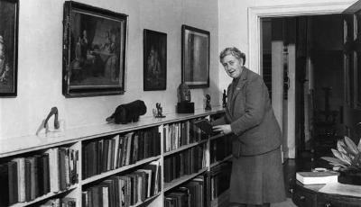
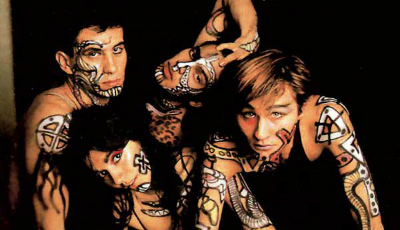

Interesovanja
Španija
Kraljevina Španija je nezavisna evropska država, po ustavnom uređenju parlamentarna monarhija. Od 1986. godine je članica EU. Smeštena na jugozapadu Evrope, Španija zauzima veći deo Pirinejskog poluostrva. Deo njene teritorije čine i dva arhipelaga, smeštena u Sredozemnom moru (Balearska ostrva) i Atlantskom okeanu (Kanarska ostrva), severno-afrički primorski gradovi Ceuta i Melilla, koji su pod španskom upravom, i enklava Llivia, u francuskim Pirinejima. Španija se graniči, na severu, sa Francuskom i Andorom, sa Portugalom, na zapadu, i sa britanskom kolonijom Gibraltar, na jugu.
- Glavni grad: Madrid
- Službeni jezik: španski
- Državna himna: Marcha Real
- Površina: 504.030 km²
- Stanovništvo: 46.609.700 (2013.)
- Gustina naseljenosti: 93/km²
- Valuta: euro
Mačke
Mačka je mali mesožer, sisar iz roda Felis. Veruje se da je njen predak bila divlja afrička mačka Felis silvestris lybica. Mačke žive u bliskoj vezi sa ljudima najmanje 9500 godina. Postoji mnogo različitih sorti mačaka, od kojih su neke bezrepe ili bezdlake, kao rezultat mutacija, i ima ih u različitim bojama. One su vešti grabljivci i poznato je da za ishranu love preko 1000 različitih vrsta životinja. Veoma su pametne. Neke od njih se mogu naučiti, ili čak nauče same, da pokreću jednostavnije mehanizme, poput kvake na vratima, ili ručice na vodokotliću. Komuniciraju glasom (mjaukanjem), predenjem, frktanjem, režanjem, škljocanjem, i sa još oko stotinu drugih glasova, kao i govorom tela. Mačke koje žive u grupama, koriste kombinaciju glasova i govora tela, za međusobno sporazumevanje. Pošto je odomaćivanje mačke relativno sporo, mačke takođe mogu samostalno da žive u divljini, često formirajući manje kolonije. Povezanost ljudi i mačaka dovela je do njenog pojavljivanja u mitologiji i legendama više kultura, uključujući drevnu egipatsku, kinesku i nordijsku. Uobičajeno verovanje bilo je da je mačka pripitomljena u drevnom Egiptu, gde je bila kultna životinja. Međutim, studija iz 2007. otkrila je da sve linije od kojih domaće mačke vode poreklo, potiču od nekoliko (do pet) samopripitomljenih afričkih divljih mačaka (Felis silvestris lybica), sa Bliskog istoka, približno 8000. pre nove ere.
Agata Kristi
Agata Kristi (Torki, 15. septembar 1890 - Volingford, 12. januar 1976) bila je britanska književnica, autor brojnih kriminalističkih romana. Kao najpoznatijeg svetskog pisca misterija, nazivaju je i "kraljicom zločina". Tokom svoje književne karijere, koja je trajala više od pola veka, napisala je 79 knjiga, od toga 66 kriminalističkih romana, i više zbirki kratkih priča i drugih dela, koja su prodata do sada u više od dve milijarde primeraka širom sveta, i prevedena na više od 50 jezika. Prema "Ginisovoj knjizi rekorda" , najprodavaniji je autor svih vremena. Zabeleženo je da su jedino Biblija i Šekspirova dela doživela veću prodaju od romana Agate Kristi. Njena drama "Mišolovka" je premijerno izvedena u Londonu 25. novembra 1952. godine, i to delo je do sada , najduže neprestano igran komad, u istoriji pozorišta, koje je imalo više od 25.000 izvođenja. Proglašena je, 2013. godine, za najboljeg pisca detektivskih priča, a njen roman "Ubistvo Rodžera Akrojda", za najbolji krimi roman svih vremena.
- Najznačajniji likovi:
- Hercule Poirot
- Miss Marple
EKV
EKV je bila rok grupa iz Beograda, jedna od najuticajnijih i najuspešnijih grupa na prostoru bivše Jugoslavije.Aktivan period: 1982-1994.
- Srž benda su činili:
- gitarista i pevač Milan Mladenović
- klavijaturistkinja Margita Stefanović
- basista Bojan Pečar
- Žanr:
- post-pank
- alternativni rok
- psihodelični rok
- rok
- Studijski albumi:
- Katarina II, 1984.
- Ekatarina Velika, 1985.
- S vetrom u lice, 1986.
- Ljubav, 1987.
- Samo par godina za nas, 1989.
- Dum dum, 1991.
- Neko nas posmatra, 1993.